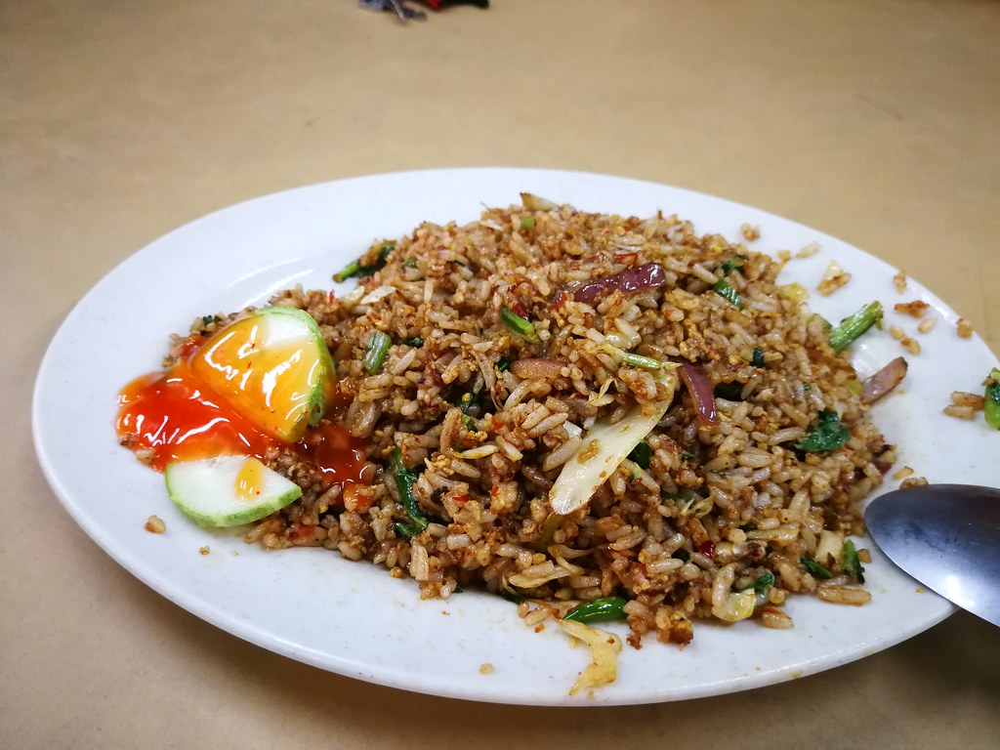

Nasi Goreng - Indonesian Fried Rice

Ingredients
- Cooking spray
- 3 large eggs, beaten
- 1 tablespoon vegetable oil
- 1 onion, chopped
- 1 leek, chopped (optional)
- 2 green chilies, chopped (adjust for spice preference)
- 1 clove garlic, minced
- ½ pound skinless, boneless chicken breasts, cut into thin strips
- ½ pound peeled and deveined shrimp (optional, other protein can be used)
- 1 teaspoon ground coriander
- 1 teaspoon ground cumin
- 3 cups cold cooked white rice
- 3 tablespoons kecap manis (sweet soy sauce)
Instructions
- Heat vegetable oil in a wok or large frying pan over high heat. Scramble the eggs and set aside.
- Add a little more oil if needed and stir-fry onion, leek (if using), chilies, and garlic until softened, about 3 minutes.
- Incorporate chicken, shrimp (if using), coriander, and cumin. Cook for 5 minutes, stirring frequently.
- Increase the heat and add the cooked rice, breaking up any clumps. Stir in the sweet soy sauce and cook for another 3-5 minutes until heated through.
- Finally, fold in the scrambled eggs and cook for another minute until everything is well combined.
- Serve your Nasi Goreng hot and enjoy the taste of Indonesia!